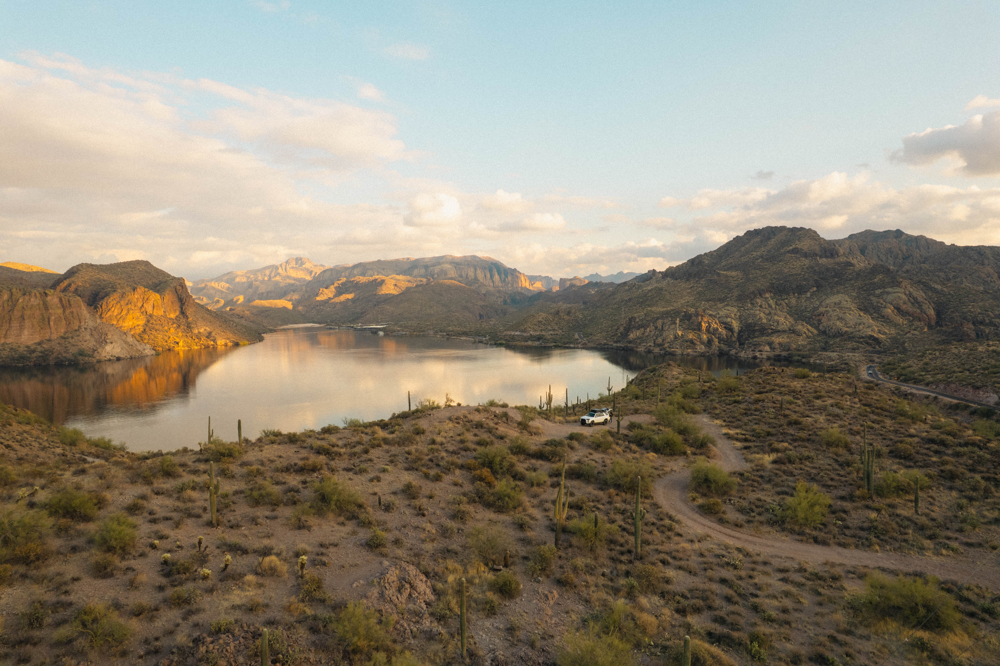

Optimized for popularity
Crowdsourced lists pile around the same overcrowded spots — and miss the quieter, better ones.
A data-driven exploration tool for discovering better campsites, routes, and light — built end-to-end as a 0→1 product.
Visit RoamsWildExisting tools surface what's popular — not what's actually good. When you're on the road, the problem isn't a lack of options. It's evaluating which ones are worth your time.
Crowdsourced lists pile around the same overcrowded spots — and miss the quieter, better ones.
Finding good campsites, scenic routes, and ideal lighting means juggling four or five apps.
No way to verify quality before you arrive. Decision fatigue from juggling conflicting info.

The best spots aren't the most reviewed — they're the most contextually relevant.
A true solo build — and a hands-on learning exercise in LLMs and agentic coding. I defined the problem space, designed the product, and partnered with AI tools to ship a working system end-to-end. No engineering team, no existing patterns to lean on — just me, the models, and a lot of iteration on how to actually direct them.
A vague prompt, no clear product, and an output that looked like every other AI experiment. The mess is what forced the strategic reframe on the next slide.

People who camp off-grid on public land — overlanders and van lifers navigating BLM, USFS, and forest roads who need to make real decisions about where to stop.
Understanding land access rules, assessing terrain quality for camping, and timing trips around weather and lighting conditions.
Not more results — better ones. Quality over quantity, surfacing only locations that match real conditions and preferences.
RoamsWild is a set of decision-support systems. Open data feeds, modern APIs, and AI scoring combine into recommendations a person can actually trust — and understand.
RoamsWild ingests road networks, public land boundaries, terrain profiles, and satellite imagery — then distills it into recommendations you can act on without cross-referencing four apps. The system does the analysis so the user just decides: stop here, or keep driving.
Find campsites that don't exist in any database. The Explorer builds a road network graph from five government data sources, detects dead-ends on public land, and scores each for viability — then lets you verify any spot with AI-powered satellite analysis.
Traditional apps show you where other people camped. The Explorer derives where you could camp from road geometry and land boundaries — then uses AI to tell you if it's worth the drive.
AI-assisted trip building with day-by-day itinerary generation. Tell it where you're headed and how long you have — it builds a route with camping spots, stops, and timing based on real terrain and weather data.
A sunrise/sunset photography forecast built on terrain visibility analysis. It tells you not just when golden hour is, but whether the light will actually hit the features you care about — using the DAGS, VAS, and LAA scoring pipeline.
Serendipity-driven region recommendations with diversity scoring. When you don't know where to go, Surprise Me surfaces regions you wouldn't have searched for — weighted to avoid repetition and favor variety.
AI tools collapsed the gap between design intent and shipping code.
Trip planner, campsite discovery, scoring system, light report, and surprise me — deployed with auth, database, and APIs.
Used on actual trips. The signals hold up where standard apps don't.
I built five features when I should have shipped one complete one. Breadth came at the cost of polish — each feature works, but none feels fully finished.
Detailed design work is significantly harder when you're iterating in live code at this pace. The gap between "functional" and "refined" is wider than it looks.
Five parallel API calls add latency users can feel. AI analysis per spot costs real money. Performance and cost shape what the product can actually be.

Incorporate user behavior and preferences so recommendations adapt over time, not just to location.
Real-time adjustments to weather, light, and access — surfacing what's good right now, not just nearby.
Downloadable map tiles and cached scoring data for areas without cell coverage — essential for the dispersed camping use case.